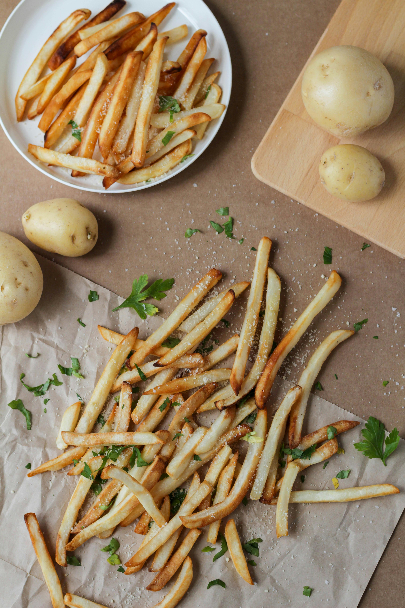

Home
Oven Fries

Description
Oven fries are an exceptionally delicious and very popular snack. You can easily make them yourself at home. They're super delicious and come out perfectly crispy.
Ingredients
- 1 kg floury potatoes - type C or optionally type B
- 1 flat tablespoon of powdered sugar - only for soaking the sliced potatoes
- 2 tablespoons of frying oil - neutral oil with a high smoke point
- Spices:
- Half a teaspoon each of salt, Provencal herbs and sweet paprika
Steps
- Wash and thinly peel one kilogram of potatoes.
- Cut each potato lengthwise into slices about 1.5-2 cm thick, then into strips.
- Place the fries in a bowl of cold tap water and rinse.
- Pour the water back into the bowl and rinse the potato strips again. (3-4 times, until the water runs clear).
- Pour very cold water into the bowl one last time.
- Add a level tablespoon of powdered sugar and briefly mix the potatoes with the water and sugar.
- Set the bowl aside for about 40 minutes.
- After about 40 minutes, you can pour out all the water and rinse the raw fries thoroughly under cold, running water.
- Transfer the fries to a clean cotton cloth or paper towel.
- Thoroughly dry the fries. They should be perfectly dry and matte.
- Start preheating the oven. Set the convection mode to 200 degrees Celsius (400 degrees Fahrenheit).
- Place the drained fries in a large bowl.
- Pour in two tablespoons of frying oil and seasonings.
- Thoroughly mix the fries with the oil and seasonings.
- Line a large baking tray with baking paper.
- Transfer the potato strips, coated with fat and spices, to the tray.
- Arrange the fries so they don't stack on top of each other.
- Place the baking sheet with the ready-to-bake fries in a well-heated oven.
- The fries were done after 40 minutes, but I left them in the oven longer to brown them a bit more.
- I highly recommend checking the fries' appearance after just 10 minutes of baking.
- Baked fries can be removed from the oven immediately and served while still hot. Enjoy!